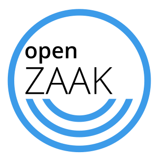

Codebases we work with

OpenZaak
Stage 2: Incubation
What it is
OpenZaak is a case management platform for municipalities that want to deliver citizen-friendly services online.
It is a ready-to-use backend solution that acts as a directory of case registration, including metadata describing the case.
OpenZaak implements the Dutch national API standards for case management, developed by the Association of Netherlands Municipalities (VNG).
How we're helping
We're helping launch the OpenZaak open source ecosystem by:
- Running a market consultation to co-create codebase governance and community dynamics, and better understand vendor business models and risk sharing
- Advising on decentralized procurement
- Building the community through shared events, setting up governance, a mailing list and marketing materials
Technology
- Languages and frameworks:
- Python
Community
- Created by:
- A coalition of more than 45 Dutch municipalities including Amsterdam, Arnhem, Delft, Haarlem, 's-Hertogenbosch, Rotterdam, Tilburg, Hoorn, Medemblik, Utrecht, SED (composed of Stede Broec, Enkhuizen and Drechterland) and Dimpact (composed of more than 30 municipalities) (2019)
- Replicating:
- The commissioning municipalities are currently looking for vendors who can offer them services using OpenZaak. They held a market consultation in spring 2020.
Opportunity
- Scaling potential:
- Other Dutch municipalities, other industries that use a case management system (like hospitals or hotels).
We're working closely with the commissioning municipalities to help them grow OpenZaak to a trusted codebase with:
- Many vendors offering a range of services using OpenZaak
- Widespread adoption by municipalities
OpenZaak maintainers see meeting the Standard for Public Code as integral to achieving their vision.